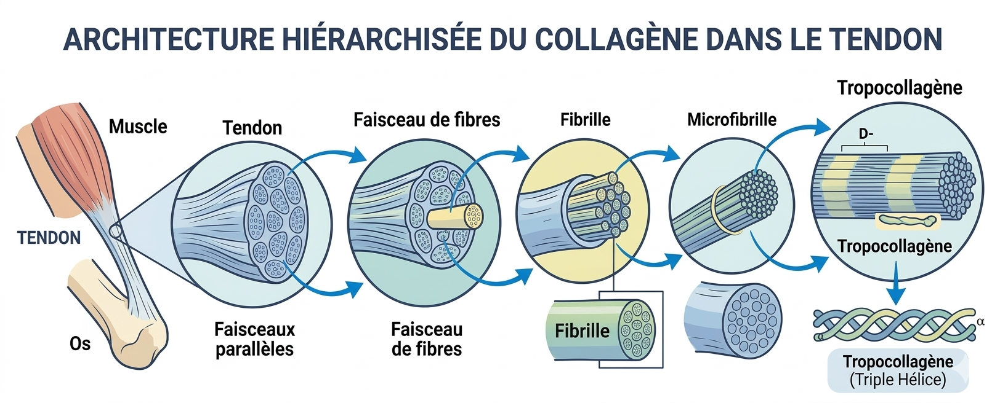
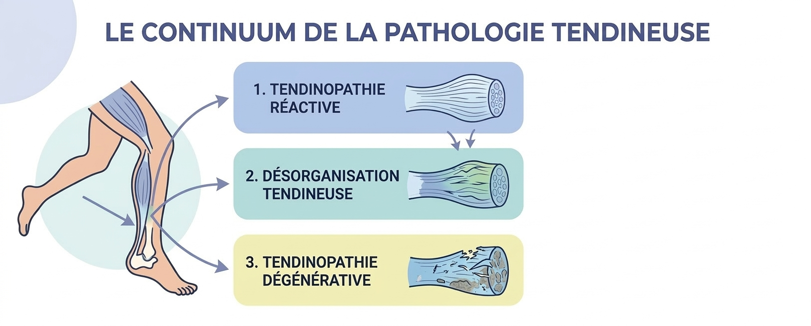
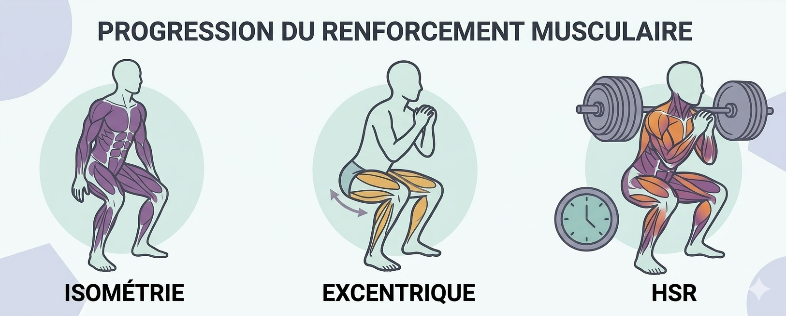

Tendinite : Comprendre la douleur pour mieux guérir
Lors de ma préparation à une course, j’ai été confrontée à une tendinite. Cette blessure m’a poussée à effectuer des recherches pour comprendre l’origine de ma douleur et identifier les thérapies les plus efficaces pour favoriser une guérison rapide. Au fil de mes lectures, j’ai découvert que la tendinite, ou plus précisément la tendinopathie, correspond à une altération cellulaire et structurelle. Cet exemple m’a semblé idéal pour illustrer le lien entre la kinésithérapie et la biochimie/chimie.
Qu’est-ce qu’une tendinopathie ?
Le mot « tendinite » est très utilisé, aussi bien chez les sportifs amateurs que chez les athlètes confirmés, pour désigner les douleurs du tendon. Pourtant, il est inexact : par son suffixe -ite, il suggère une origine inflammatoire, alors que les connaissances actuelles montrent que le mécanisme à l’origine de ces douleurs est plus complexe.
La douleur tendineuse apparaît généralement lorsque les contraintes appliquées au tendon dépassent sa capacité d’adaptation. Ce déséquilibre entraîne une altération progressive de sa structure, évoluant en trois phases distinctes. La première, la tendinopathie réactive, est une réponse adaptative immédiate. Cependant si la surcharge persiste, le tendon entre dans une phase de désorganisation, pouvant aboutir à une phase de dégénérescence (ou tendinose).
Le terme tendinopathie est donc aujourd’hui le plus approprié, car il regroupe l’ensemble de ces processus.
Pourquoi les tendinopathies apparaissent ?
Une tendinopathie apparaît lorsque les contraintes appliquées au tendon dépassent ce qu’il peut supporter. Cette capacité de résistance dépend de plusieurs facteurs :
- Les facteurs extrinsèques : C’est la charge de travail au quotidien — vitesse, intensité, volume d’entraînement.
- Les facteurs intrinsèques : C’est le terrain biologique, comme l’âge, la génétique ou le mode de vie, qui déterminent la capacité de résistance naturelle des tissus.
Dans mon cas, cette tendinopathie n’est pas apparue par hasard. La charge que j’ai imposée à mon tendon a dépassé, de manière répétée, sa capacité de résistance, ainsi mon tendon n’est pas parvenu à se régénérer correctement et est entré progressivement dans un processus de dégradation.
Pourquoi la biochimie est essentielle pour comprendre le tendon ?
Le tendon n’est pas juste un “cordon” entre le muscle et l’os ; c’est un tissu conjonctif qui a pour rôle de transmettre les forces de contraction, facilitant ainsi le mouvement et contribuant à la stabilité articulaire. Il est composé de cellules, les ténocytes, qui travaillent au sein d’une matrice extracellulaire (MEC).
Les ténocytes
Ce sont les cellules du tendon. Ils assurent deux fonctions essentielles :
- La mécanotransduction : Les ténocytes agissent comme des capteurs. Ils détectent les contraintes mécaniques — étirements, tensions, charges — imposées au tendon.
- Le remodelage de la matrice extracellulaire (MEC) : En réponse à ces informations, les ténocytes ajustent la composition de la matrice extracellulaire. Ils adaptent ainsi le tissu pour qu'il soit plus solide ou plus souple, selon la contrainte appliquée.
La matrice extracellulaire (MEC)
C’est la structure principale du tendon. Elle contient deux éléments essentiels :
- Le collagène de type I : C’est le composant principal du tendon. Les molécules de collagène s’organisent en architecture hiérarchisée. C'est cette structure organisée qui assure la résistance à la traction du tendon.
- Les protéoglycanes : Ces molécules agissent comme des éponges moléculaires capables de retenir l'eau au sein de la MEC. C'est cette hydratation contrôlée qui confère au tendon ses propriétés viscoélastiques, lui permettant de se déformer sous la contrainte, puis de retrouver sa forme initiale.

C’est grâce à sa structure que le tendon possède ses propriétés mécaniques : il est suffisamment solide pour transmettre la force musculaire et suffisamment souple pour stocker puis restituer une partie de l’énergie lors du mouvement.
A noter: Le tendon est faiblement vascularisé, ce qui ralentit son métabolisme et ses capacités de réparation. Cela explique pourquoi les lésions tendineuses mettent souvent longtemps à guérir.
Que se passe-t-il dans une tendinopathie ?
Pour comprendre comment un tendon sain bascule vers un état pathologique, il faut observer l'évolution de sa matrice extracellulaire à travers les différents stades de la tendinopathie.

La tendinopathie réactive
Lorsque le tendon est soumis à des contraintes dépassant sa capacité, une série de réponses cellulaires se met en place. Pour tenter de s’adapter, les ténocytes commencent par modifier la composition de la matrice extracellulaire, en produisant davantage de protéoglycanes. Cela entraîne une rétention d’eau dans le tendon et provoque un épaississement protecteur du tissu. À ce stade, si la charge mécanique diminue, le tissu peut encore retrouver son organisation initiale.
La désorganisation tendineuse
Si le tendon continue d’être surchargé sans repos suffisant, un déséquilibre entre la synthèse et la dégradation des composants du tendon s’installe. Les ténocytes, en plus de continuer à produire les protéoglycanes se mettent alors à changer le type de collagène produit. Ils privilégient la synthèse rapide de collagène de type III, un collagène dont les fibres sont fines et désorganisées, pour combler les zones fragilisées.
Progressivement, le surplus de molécules et le changement de type de collagène perturbent l’alignement normal des fibres et entraîne une désorganisation de la structure du tendon.
La tendinopathie dégénérative
Lorsque la désorganisation devient importante, elle peut entraîner l’apparition de zones dites « mécaniquement silencieuses », incapables de ressentir ou de transmettre efficacement la force musculaire. À ce stade, la capacité du tissu à retrouver une structure normale est très limitée.
Toutefois, l’atteinte n’est généralement pas uniforme : certaines fibres conservent une organisation fonctionnelle et permettent encore la transmission d’une partie des forces du muscle vers l’os.
Ainsi, malgré la présence de zones dégénératives, le tendon peut rester partiellement fonctionnel et tolérer, dans une certaine mesure, une mise en charge progressive adaptée.
Comment inverser la tendance ? Le traitement de la tendinopathie.
Le traitement de la tendinopathie varie selon le profil du patient, ses activités ainsi que la tolérance de son tendon à la charge et à la douleur.
De manière générale, l’objectif du traitement est de restaurer la capacité du tendon à supporter les contraintes mécaniques. La mise en charge progressive envoie aux ténocytes les stimuli mécaniques nécessaires pour relancer les processus de remodelage de la matrice extracellulaire et améliorer la fonction du tendon.
La rééducation suit généralement trois grandes étapes, avec une progression guidée par la tolérance du patient.
1ère phase - Gérer la douleur
Lors des phases douloureuses, l’objectif est de réduire la douleur tout en maintenant une stimulation mécanique légère. L'isométrie, ou contraction sans mouvement, permet de mettre le tendon en charge de manière contrôlée. L’angle de l’articulation, l’intensité de la contraction musculaire et la durée de l’effort sont ajustés pour que la douleur reste faible et transitoire.
2ème phase - Restaurer la capacité de charge
Une fois la douleur stabilisée, l’objectif est d’augmenter progressivement la capacité du tendon à supporter la charge. Le travail excentrique sollicite le tendon pendant son allongement, tandis que le HSR (Heavy Slow Resistance) utilise des charges lourdes à vitesse très lente. Ces deux approches permettent de stimuler le tendon de manière progressive et contrôlée, en respectant la tolérance à la douleur.
Dans mon cas, ma tendinopathie était douloureuse seulement lors des efforts intenses ou prolongés. J’ai donc réduit ces efforts et j’ai intégré des exercices excentriques, ce qui a permis à mon tendon de retrouver une bonne tolérance à la charge sans douleur.

3ème phase - Retour à la performance
La dernière étape consiste à réhabituer le tendon aux contraintes de l’activité quotidienne ou sportive. Les exercices sont adaptés aux objectifs du patient et à la capacité de son tendon, avec une progression allant de mouvements fonctionnels à des sollicitations plus dynamiques.
Les traitements complémentaires : Du cas par cas
Selon le stade de la pathologie et le contexte clinique, des thérapies comme les ondes de choc, le PRP (plasma riche en plaquettes) et les infiltrations peuvent être envisagées pour améliorer les symptômes, notamment la douleur et les capacités fonctionnelles. Toutefois, leurs effets sur la structure du tendon restent variables et souvent limités, avec un bénéfice principalement clinique.
Pour compléter cette prise en charge, la rééducation peut également intégrer le Tendon Neuroplastic Training (TNT). Cette méthode repose sur le constat que la pathologie modifie également la commande nerveuse du muscle. Le TNT combine donc la sollicitation mécanique avec une rééducation du contrôle moteur, afin de restaurer une synergie entre le cerveau et le complexe musculo-tendineux.
En résumé
La tendinopathie illustre parfaitement le lien entre chimie et kinésithérapie : derrière une douleur souvent perçue comme simple se cachent des mécanismes biochimiques complexes, régulés par les ténocytes et la matrice extracellulaire. Comprendre ces processus permet non seulement de mieux appréhender la pathologie, mais aussi de guider efficacement la rééducation.